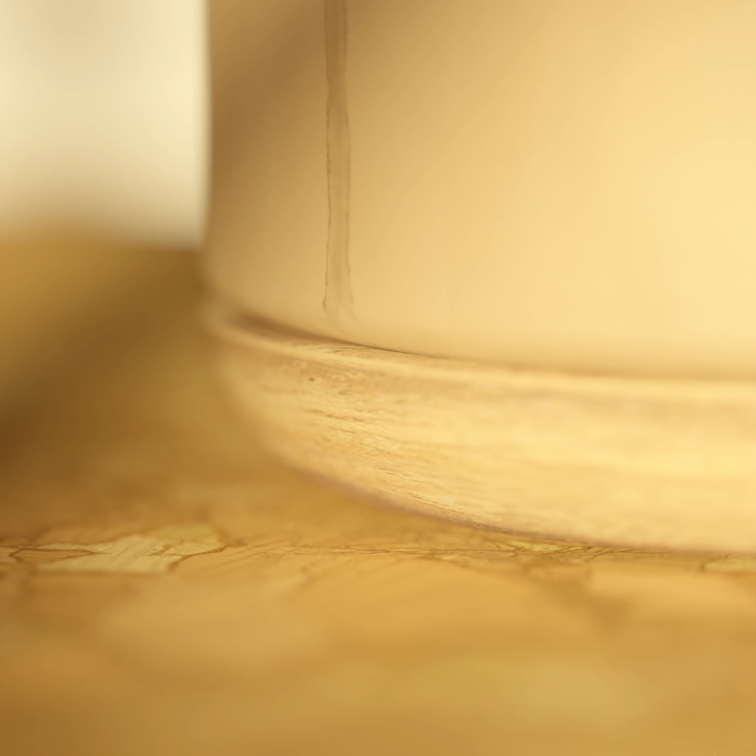
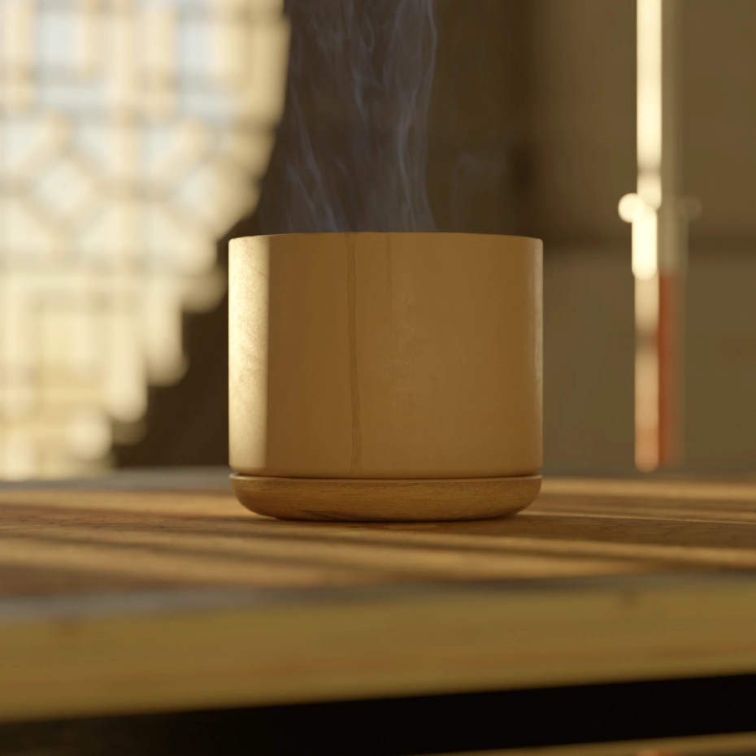
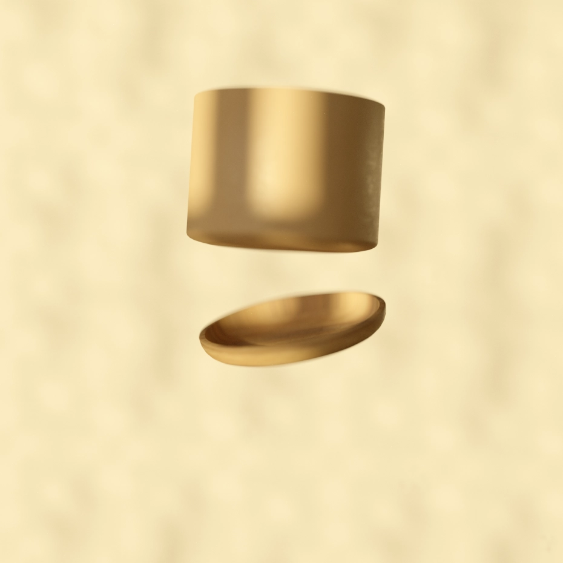
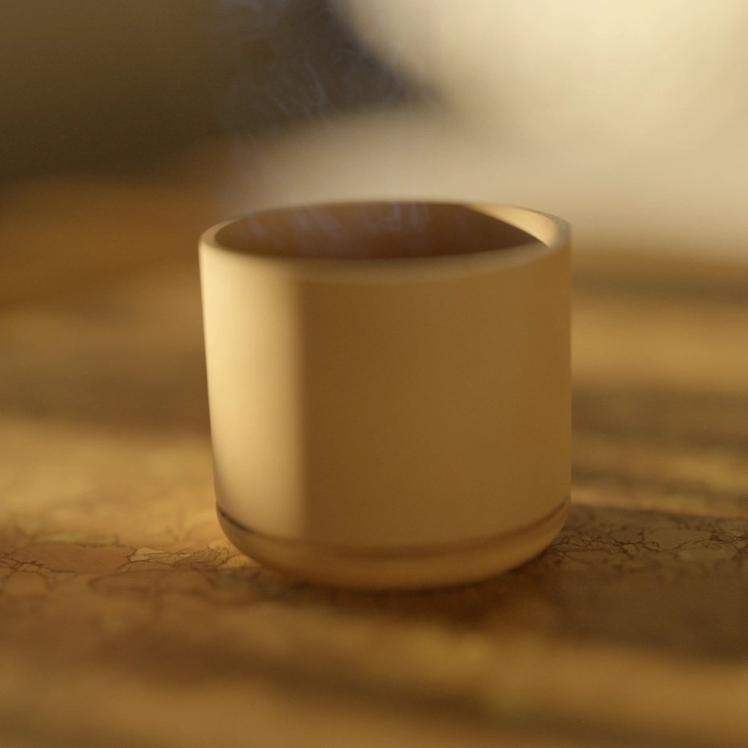

Most times the simplest solution is the best - basic shapes coming together to combine form and function.
I always liked the idea of mugs with integrated coasters, so this is what i choose to explore for one of renderweeklys challanges.




Making it reality
Becuase I liked the concept so much, I decided to make a proper technical model and 3D-print it.
The top-part is made from lihgtweight foaming PLA and the bottom-part is woodfill PLA.